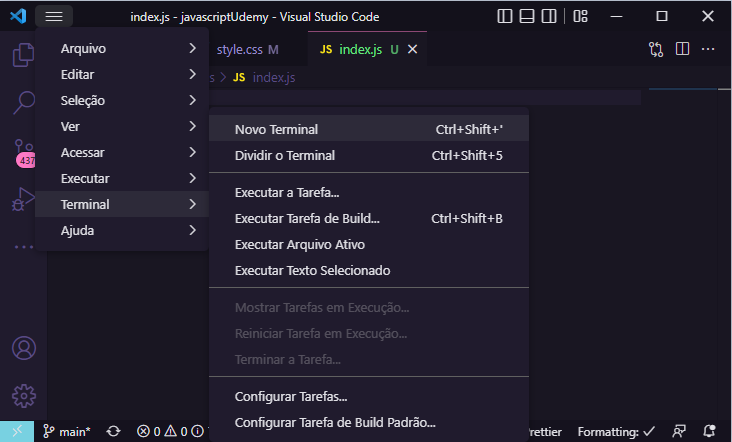
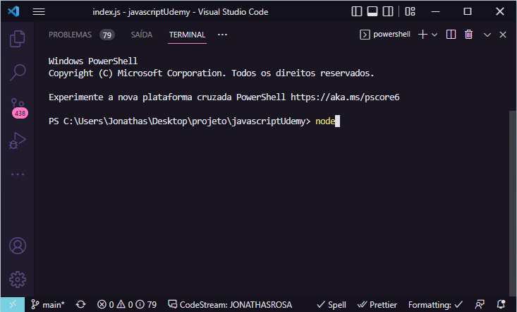
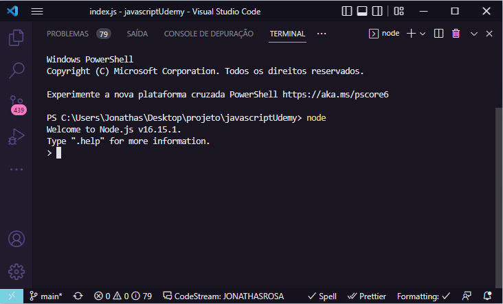
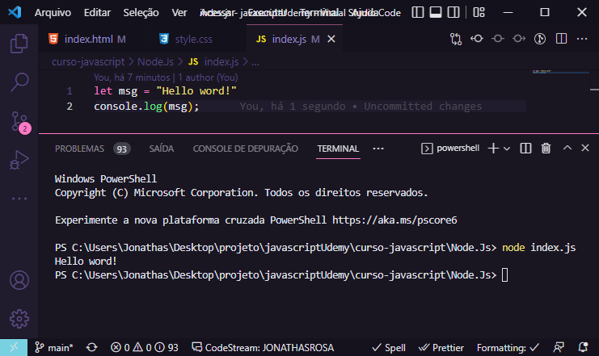
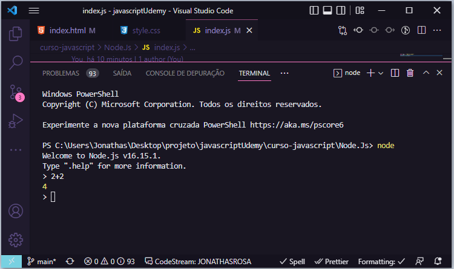
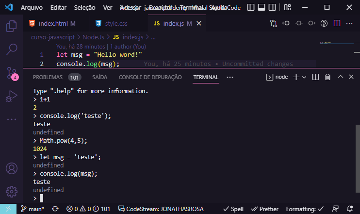
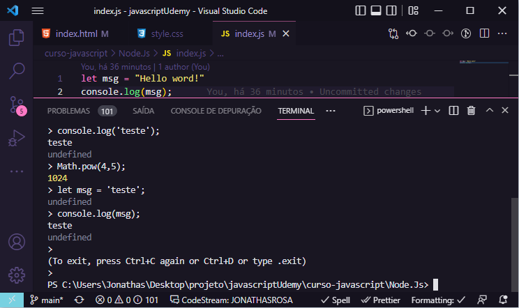
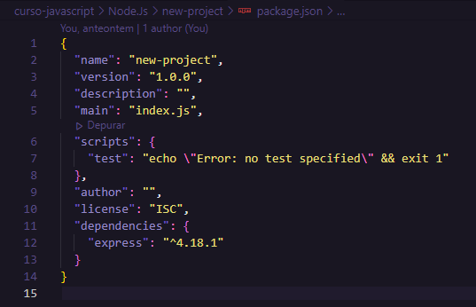

Node.JS
O que é Node?
Node.JS não é uma linguagem de programação, mas uma ferramenta construída sobre o motor JavaScript do Google Chrome para criar aplicações rápidas e escaláveis. O problema é que cada conexão de um cliente aloca um espaço na memória, com o Node.Js cada conexão é um evento executado na engine no Node., ou seja, o Node suporta muito mais conexões sumultâneas do que PHP e Java em uma máquina igual, por exemplo.
Testando o Node
Podemos criar um arquivo JavaScript e executar com o Node.JS.
Para executar o Node.JS em sua maquina após instalado, você deve abrir um arquivo JavaScriprt no Visual Studio Code e aperta a tecla "F8" do seu teclado, com isso ele vai abrir o terminal no Node.JS sendo possível a execussão, ou você também pode seguir os seguintes passos:

Com o terminal aberto você digita "node"

e pronto você já terá um terminal pronto para uso, como você pode ver a baixo.

A partir do terminal conseguimos executar arquivos JavaScript, cria-se a variável no JavaScript e no terminal utilizando o comando "node' seguido do nome do arquivo, vejamos:

Ou outras açãos:

Com o comando node podemos executar instruções de Java Script rodando o comando node, podemos fazer operações matemáticas, utilizar funções do JavaScript e muito mais
E para sair do terminal você aperta as teclas 'Crtl+C' duas vezes. 
O NPM
O NPM é uma ferramenta que gerência pacotes utilizada para instalar módulos de Java Script, que podem fazer desde operações matemáticas até comunicação HTTP com requisições. Instalamos um pacote pelo comando: npm install pacote que vem junto com o Node, porém tem um detalhe, quando instalamos dessa maneira instalamos ele de forma global, passando a ter uma dependência extra no computador, dependendo do projeto criado é interessante instalar cada versão de pacote de forma individual.
Iniciando um Projeto
Sempre que formos iniciar um novo projeto, o certo é sempre baixar um novo PACK de NPM para o projeto, podendo ser criado pelo template, utilizando o comando npm init criando um packge.json servindo para configurações e salvar as dependências.
Com o terminal NODE aberto, vc vai iniciar com o comando 'npm init' e preencher os dados do projrto para deixá-lo mais organizado, com as seguintes informações:

Quando iniciamos um novo projeto sempre que instalamos os pack's, todas as dependências do package.json são instaladas na máquina caso não tenha, isso é muito bom, pois não salva muitos arquivoa na máquina.
Módulo de File Sistem
Módulos e pacotes são utilizados para um determonado fim e são muito utilizados, um deles é o file sistem, que serve para trabalhar com arquívos e diretórios(fazer qualquer tipo de alteração), ele tabém já é incluso no NODE, assim não precisamos instalar.
A função do pack, será inserido em variáveis em um script, e ela será utilizada no NODE.
EX:
let {readFile} = require('fs');
readFile("arquivo.txt", "utf8" (error,text) => {
if(error) {
throw error;
} else {
console.log(text);
}
});
Além de ler arquivos nós também podems escrever arquivos utilizando o File Sistem.
EX:
writeFILE("arquivo.txt", "Inserir este texto", (error) => {
is(error) {
console.log(error);
} else {
console.log("Escreveu o arquivo");
}
});
Módulo HTTP
O módulo HTTP também é muito utilizado e serve para criar servidores, também já vem com o NODE.
EX:
const {createServe} = require("HTTP");
let server = createServer((request, response) => {
response.writeHead(200, {"Content-Type": "text/html"});
response.write(`<h1>Hello Word!</h1>
<p>Primaira página WEB com Node.JS</p>`);
response.end();
});
server.listen(8000);
console.log("Listening! (port 8000)");
O que é API
Application Programming Interface (API), é uma maneira de se comunicar via HTTP a um servidor a fazer operações como: visualizar, deletar, criar e atualizar dados. Grandes aplicações como Facebook e Instagram utilizam APIs, grande parte dos sofwares desenvolvidas em Node.Js tem API e utilizam um framework chamado Express para isso.
O que é REST e RESTful?
Quando falamos em API estamos nos condicionando a REST e RESTful.
REST = Representationl State Transfer, princípios e regras que permitem criar uma aplicação com interfaces bem definidas.
RESTful = Capacidade de aplicar os princípios do REST.
Rest e os verbos HTTP
Sempre que criamos uma API devemos utilizar os verbos HTTP corretos para cara URL da nossa aplicação.
Verbo GET: para solicitar dados.
Verbo POST: para inserir dados.
Verbo DELETE: para deletar dados.
Verbo PUT: para atualizar dados.
O que é EXPRESS
É um framework web, muito utilizado para criar aplicações em Node.Js, utiliza em seu core o módulo HTTP para criar as comunicações, além de outros módulos. Ele precisa ser instalado no Node.JS.
Link da documentação do express.js
O que são Rotas
São basicamente URL que queremos acessar. Quando tratamos de uma API chamamos as URLs de rotas, no express cria-sse as rotas para serem acessadas via HTTP e responderem baseadas numa lógica que inserimos, cada rota recebe um método HTTP, que deve coincidir com o proposto pelo REST.
Postman
Postman é o software mais utilizado para testar APIs. Quando ainda não existir uma interface gráfica podemos testar por meio dele as rotas de nossa API
Site criado por ©JonathasRosaDev.